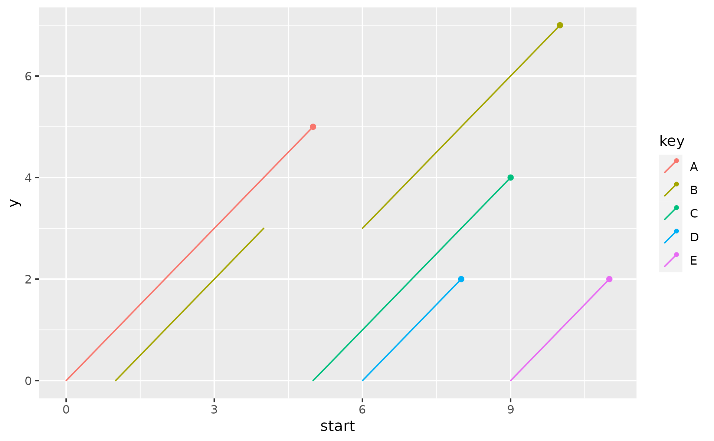
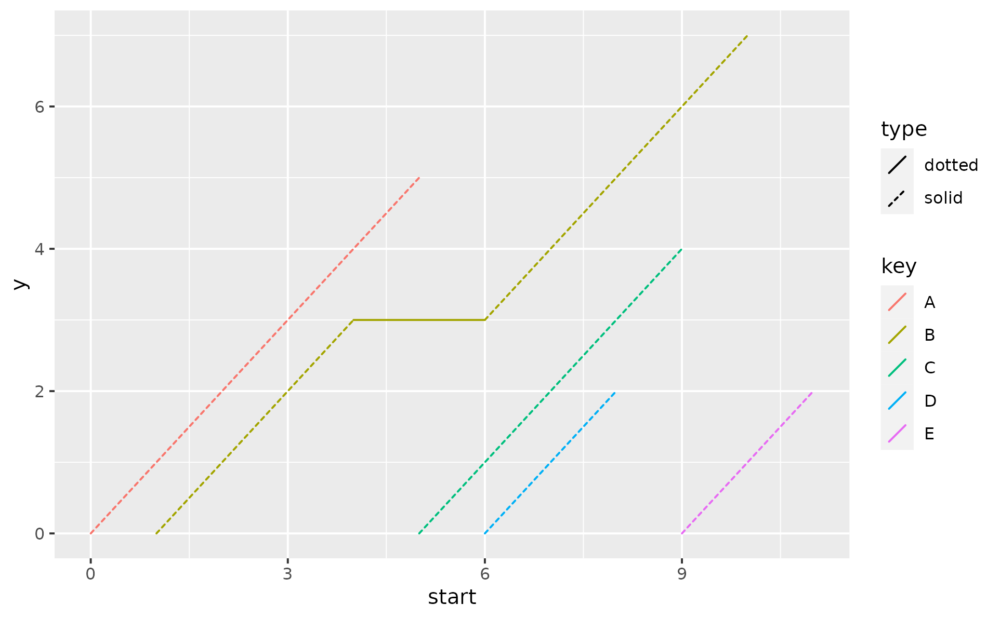
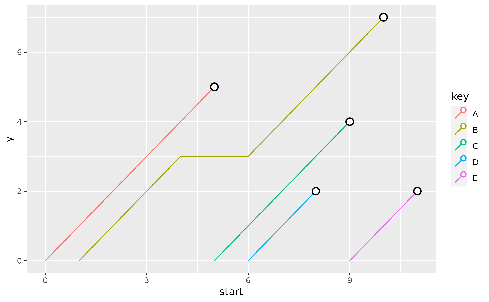

The lexis geom is used to plot 45° "lifelines" for each cohort. Lexis diagrams are used by demographers for more than a century and they are named after Wilhelm Lexis. They are a combination of a segment, starting at 0 with a dot at the end.
Usage
geom_lexis(
mapping = NULL,
data = NULL,
...,
point_show = TRUE,
point_colour = NULL,
point_size = NULL,
gap_filler = TRUE,
lineend = "round",
linejoin = "round",
na.rm = FALSE,
show.legend = NA,
inherit.aes = TRUE
)Arguments
- mapping
Set of aesthetic mappings created by
aes()oraes_(). If specified andinherit.aes = TRUE(the default), it is combined with the default mapping at the top level of the plot. You must supplymappingif there is no plot mapping.- data
The data to be displayed in this layer. There are three options:
If
NULL, the default, the data is inherited from the plot data as specified in the call toggplot().A
data.frame, or other object, will override the plot data. All objects will be fortified to produce a data frame. Seefortify()for which variables will be created.A
functionwill be called with a single argument, the plot data. The return value must be adata.frame, and will be used as the layer data. Afunctioncan be created from aformula(e.g.~ head(.x, 10)).- ...
Other arguments passed on to
layer(). These are often aesthetics, used to set an aesthetic to a fixed value, likecolour = "red"orsize = 3. They may also be parameters to the paired geom/stat.- point_show
logical. Should a point be shown at the end of each segment? TRUE by default
- point_colour
color of a point
- point_size
the size of a point
- gap_filler
logical. Should gaps be filled? TRUE by default
- lineend
line end style (round, butt, square)
- linejoin
line join style (round, mitre, bevel)
- na.rm
If
FALSE, the default, missing values are removed with a warning. IfTRUE, missing values are silently removed.- show.legend
logical. Should this layer be included in the legends?
NA, the default, includes if any aesthetics are mapped.FALSEnever includes, andTRUEalways includes. It can also be a named logical vector to finely select the aesthetics to display.- inherit.aes
If
FALSE, overrides the default aesthetics, rather than combining with them. This is most useful for helper functions that define both data and aesthetics and shouldn't inherit behaviour from the default plot specification, e.g.borders().
Details
This geom draws 45° lines from the start to the end of a 'lifetime'. Besides
y and yend coordinates this geom creates one additional variable called
type in the layer data. You might want to map to an aesthetic with
ggplot2::after_scale(), see Examples and vignette("ggpointless") for
more details.
Rows in your data with either missing x or xend values will be removed
(your segments must start and end somewhere).
Aesthetics
geom_pointless() understands the following aesthetics (required aesthetics are in bold):
x
xend
alpha
color
fill
group
shape
size
linetype
stroke
Examples
df1 <- data.frame(
key = c("A", "B", "B", "C", "D", "E"),
start = c(0, 1, 6, 5, 6, 9),
end = c(5, 4, 10, 9, 8, 11)
)
p <- ggplot(df1, aes(x = start, xend = end, color = key))
p +
geom_lexis()
p +
geom_lexis(gap_filler = FALSE)

p +
geom_lexis(aes(linetype = after_scale(type)),
point_show = FALSE
)
#> Warning: Failed to apply `after_scale()` modifications to legend

# missing values will be removed
df2 <- data.frame(
key = c("A", "B", "B", "C", "D"),
start = c(0, 1, 7, 5, 6),
end = c(5, 4, 13, 9, NA)
)
ggplot(df2, aes(x = start, xend = end, color = key)) +
geom_lexis()
#> Warning: Removed 1 rows containing non-finite values (stat_lexis).

# Ideally, `x` values should be increasing, unlike
# in the next example
df3 <- data.frame(x = Sys.Date() - 0:2, xend = Sys.Date() + 1:3)
ggplot(df3, aes(x = x, xend = xend)) +
geom_lexis()
# If `x` is of class Date, `xend` can't be of class `POSIXt` or
# `POSIXct`. The error is thrown by the scales::date_trans function.
if (FALSE) {
df4 <- data.frame(x = Sys.Date(), xend = Sys.time())
ggplot(df4, aes(x = x, xend = xend)) +
geom_lexis()
}